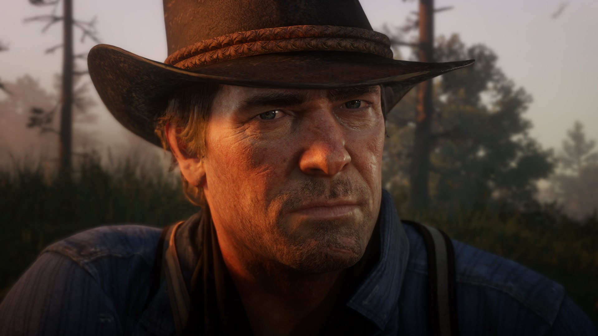

Orígenes
Arthur Morgan creció dentro de la banda Van der Linde desde muy joven, después de la muerte de su padre. Dutch van der Linde se convirtió en su mentor y en la figura paterna que moldeó su forma de ver el mundo durante más de veinte años.
Forajido · Miembro de la banda Van der Linde · Nacido en 1863

| Estadística | Valor |
|---|---|
| Fuerza | 8/10 |
| Destreza | 7/10 |
| Salud | 85/100 |
| Resistencia | 90/100 |
| Dead Eye | 6/10 |
| Honor | Variable, depende de las decisiones tomadas |
| Carisma | 6/10 |
Arthur Morgan creció dentro de la banda Van der Linde desde muy joven, después de la muerte de su padre. Dutch van der Linde se convirtió en su mentor y en la figura paterna que moldeó su forma de ver el mundo durante más de veinte años.
Hacia 1899, la era de los forajidos del viejo oeste llegaba a su fin. La expansión de la ley y el orden empujó a la banda de un estado a otro, huyendo constantemente y perdiendo miembros en el camino.
Un diagnóstico de tuberculosis cambió por completo la forma en que Arthur entendía su propia vida. Con el tiempo contado, empezó a cuestionar las decisiones de Dutch y el rumbo que había tomado su existencia como forajido.
En sus últimos días, Arthur tuvo que decidir qué clase de hombre quería ser recordado como, y a quién estaba dispuesto a ayudar antes del final.